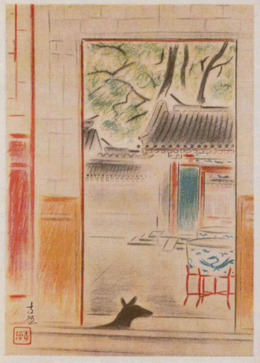
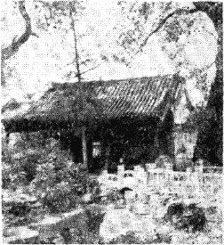
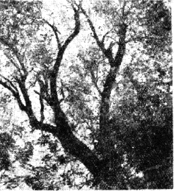

このスケッチは元華北交通會社にゐられた加藤新吉さんの北京のお宅で描いたもので……加藤さんの隨筆「可園雜記」の口繪とかにするために描いたものです。何んでも相當な大官の建てたものらしく古い宏壯な邸宅で庭園もさびれてはゐるが廣く、大きな樹木が繁り岩石が澤山入れてあり、築山の墜道をぬけて登ると七角型の亭があり長い
 廊がぐらされてゐる。水はかれてゐたが底が石敷きの深い池があり其處に針鼠が棲息し家には危險な蝎が時たまゐるといふことでした。この邸宅は可園と名づけられ、もと馮國璋の夫人の所有であつたと云ふことを聞きました。門がいくつもあつてりでもこの邸のあたりの建てこんだ露路のやうなところなどでも美しく描きたかつたのですが……描いたのはこれ一枚だけです。
廊がぐらされてゐる。水はかれてゐたが底が石敷きの深い池があり其處に針鼠が棲息し家には危險な蝎が時たまゐるといふことでした。この邸宅は可園と名づけられ、もと馮國璋の夫人の所有であつたと云ふことを聞きました。門がいくつもあつてりでもこの邸のあたりの建てこんだ露路のやうなところなどでも美しく描きたかつたのですが……描いたのはこれ一枚だけです。わたしが北京へ行つたのは昭和十六年頃で後藤君と一緒だつたが、梅原さんはこの年もいらしたがわたしの方が早かつた。夏の北京は暑かつた。
わたしは北京で病氣になつて一月ほど入院しました。病院を出てそれから間もなくこの繪を描きましたから夏の終りの頃……いや九月か十月頃です。
北京は樹が多くきれいな街でした。このお宅は北京でもずつと町のはづれで紫禁城の後の方のかなり離れたところにありました。
中國の建物は青や赤で彩色してあつて……赤もベニガラ色の赤の方で……それが大變きれいでした。
この繪は加藤さんのお家の書齋にしてゐる室から
犬は加藤さん夫妻の可愛がつてゐた黒のシエパートで親仔三匹ゐました。寫生の時には居なかつたのですがこの繪を描く時にはこゝに來てゐました。
北京には三ヶ月程居て歸つて來ましたが、中々北京にも行かれないかう云ふ時世になりますとこの繪などいゝ思ひ出になります。
★ ★ ★

